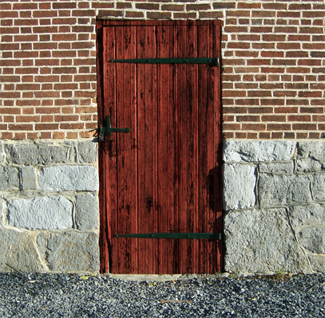

Item #: SCP-004
Object Class: Euclid

Special Containment Procedures:
When handling items SCP-004-2 through SCP-004-13, proper procedure is vital. The items are not permitted to be moved off-site unless accompanied by two Level 4 security personnel. Under no circumstances should any other component of SCP-004 be taken through SCP-004-1. The effects of doing so are as yet unknown, and the current cost of experimentation makes further research impractical.
Should any of the objects contained within SCP-004-1 breach containment, or the facility be breached, the keys must be brought inside and the door closed prior to activation of Site 62’s on-site warhead. Unauthorized removal of keys from the testing area is grounds for immediate termination.
Level 1 clearance is required for basic access to SCP-004-1; Level 4 clearance is required for use of SCP-004-2 to -13.
Description:
SCP-004 consists of an old wooden barn door (SCP-004-1) and a set of twelve rusted steel keys (SCP-004-2 through SCP-004-13). The door itself is the entrance to an abandoned factory in [DATA EXPUNGED].